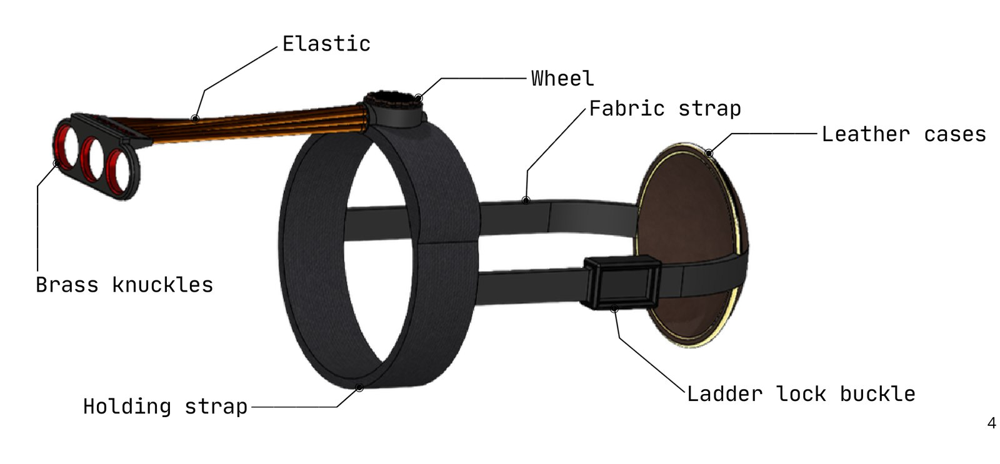
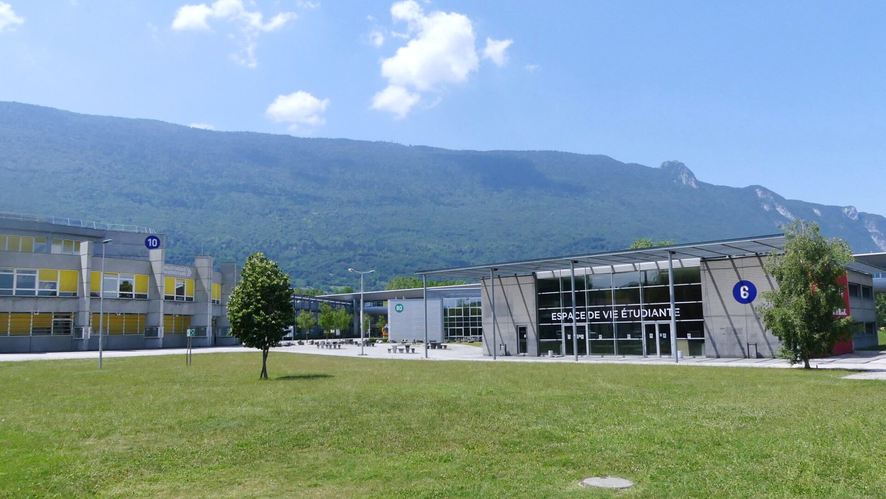
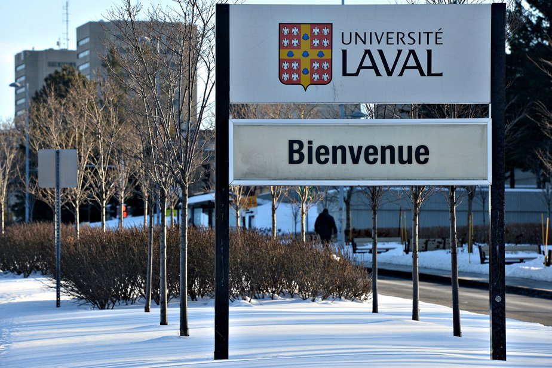
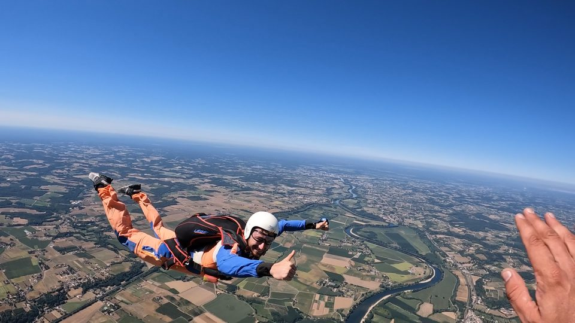
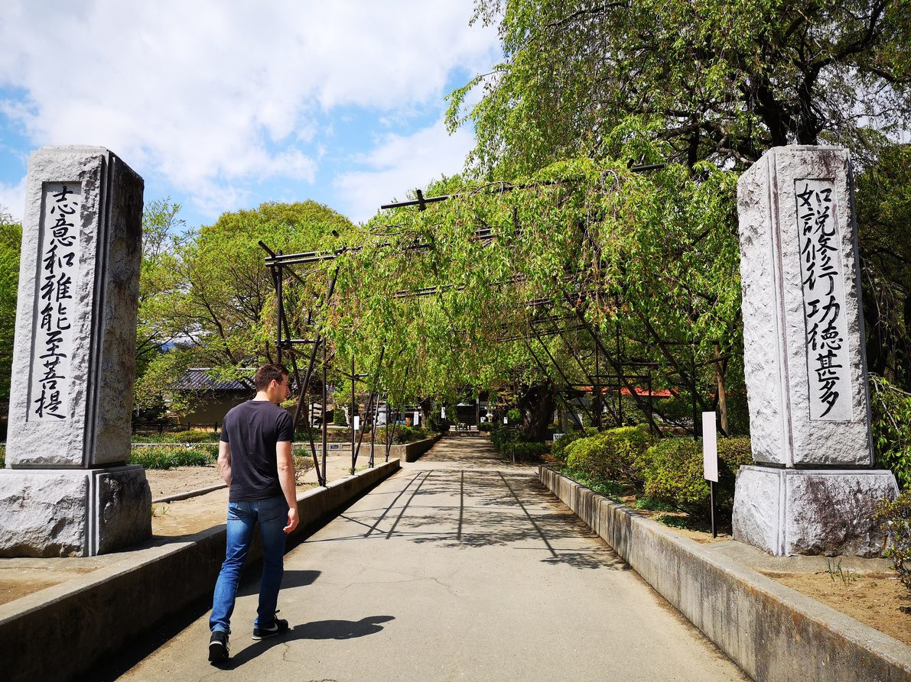
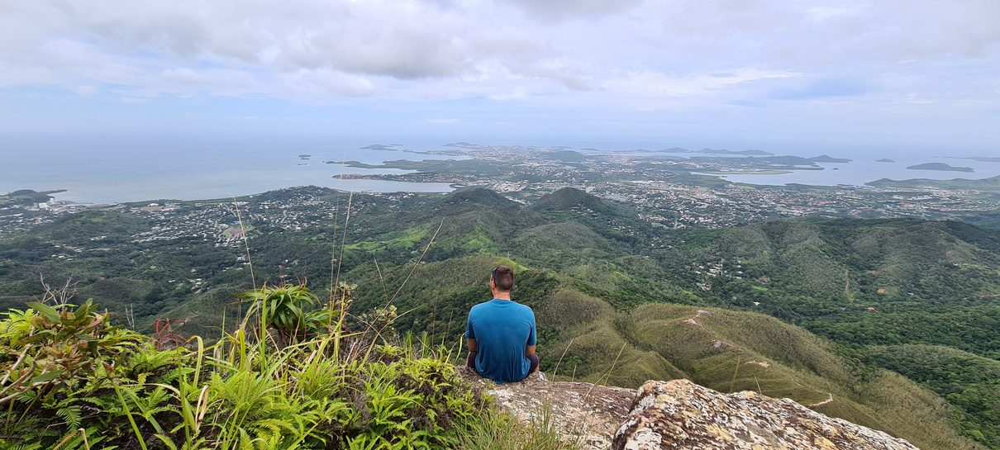

Stagiaire ingénieur qualité
HTI Technologies · groupe HTI
SMQ selon l'ISO/IEC 17025 pour l'accréditation COFRAC d'AURA Lab, workflows qualité numériques, audits de poste et CAPA.
Voir le détailDe sous-officier de gendarmerie à l'ingénierie biomédicale.
Un parcours atypique guidé par un objectif : mettre mes compétences techniques et humaines au service du monde médical.
Disponible pour un stage de fin d'études de 6 mois dès mi-février 2027 · Mobile en France et à l'international
Ma reprise d'études m'a apporté la brique technique qui me manquait. En parallèle de mon cursus, mes stages en laboratoire et en entreprise, ainsi que mon projet de dispositif médical de rééducation, m'ont donné la rigueur scientifique, l'esprit d'analyse et une compréhension concrète des exigences du secteur.
En gendarmerie, j'ai appris à gérer la pression, à agir avec méthode et rigueur dans l'urgence et à adapter mon discours à chaque interlocuteur. J'y ai développé le goût du challenge, de la pédagogie et de la gestion de conflit.
Aujourd'hui en Master 2 de Bio-ingénierie des Tissus et des Implants, je souhaite mettre cette double compétence scientifique et humaine au service de projets d'ingénierie dans le domaine médical.
Décisions sous pression, encadrement d'équipes jusqu'à 30 opérateurs, respect strict des procédures.
Protocoles expérimentaux, EMG et capture du mouvement, traitement du signal, statistiques.
ISO 13485, ISO/IEC 17025, MDR 2017/745 : audits, CAPA, gestion documentaire, traçabilité.
ISO 13485, ISO/IEC 17025, ISO 14971, ISO 10993, MDR 2017/745, 21 CFR Part 820
De la revue de littérature à l'analyse statistique
Du modèle CAO au prototype
Processus qualité plus simples et mieux tracés
Procédures strictes en gendarmerie, puis audits et traçabilité chez HTI.
Protocole et dispositif de mesure conçus seul au LIBM, plus de 25 participants recrutés ; plusieurs projets menés en parallèle chez HTI.
Équipes jusqu'à 30 opérateurs, formation de réservistes.
Décisions autonomes en situation critique, mission Sentinelle.
De la gendarmerie à la recherche puis à la qualité ; une année d'échange au Québec.
Coaching d'athlètes, encadrement d'élèves, présentations en réunions multiservices.
Deux ans de préparation intensive aux tests du GIGN, japonais appris en autodidacte.
Rigueur scientifique et intelligence émotionnelle au service de la décision.
Faites défiler
10 étapes,
de 2026 à 2017.
HTI Technologies · groupe HTI
SMQ selon l'ISO/IEC 17025 pour l'accréditation COFRAC d'AURA Lab, workflows qualité numériques, audits de poste et CAPA.
Voir le détailProjet R&D « fil rouge » · Master 1 BTI, Aix-Marseille Université
Conception, simulation numérique, prototypage et évaluation sur volontaires d'une orthèse modulable de rééducation du poignet. Projet sélectionné pour être proposé au programme PEPITE.
Voir le détailAix-Marseille Université · Faculté des Sciences du Sport
Une formation d'ingénieur biomédical à la frontière entre mécanique, biologie et clinique, adossée à un laboratoire de recherche sur le mouvement et à l'hôpital.
Voir le détailCIRRIS · Centre interdisciplinaire de recherche en réadaptation et intégration sociale
Traitement de données EMG sous MATLAB : réflexe cutané, cohérence intermusculaire et mécanismes sensorimoteurs, en collaboration internationale.
Voir le détailPréparateur physique à Québec · Agent de sécurité à Chambéry
Agent de sécurité à Chambéry (bars, lieux sensibles, férias), puis préparateur physique de l'équipe de natation Rouge et Or de l'Université Laval, à Québec.
Voir le détailLIBM · Laboratoire Interuniversitaire de Biologie de la Motricité
Conception autonome d'un protocole et d'un dispositif de mesure force-vitesse, recrutement d'une trentaine de participants.
Voir le détailUniversité Savoie Mont Blanc · année d'échange à l'Université Laval
Admis directement en L2 par validation des acquis, puis 3e année en échange à l'Université Laval (Québec).
Voir le détailGendarmerie nationale · gendarmerie mobile
Maintien de l'ordre et missions en métropole et outre-mer ; encadrement jusqu'à 30 opérateurs, décisions sous forte pression.
Voir le détailArmée de Terre · Block'Out · Abscisse Agency
Réserviste opérationnel dans l'Armée de Terre, employé polyvalent chez Block'Out (salle d'escalade) et hôte d'accueil chez Abscisse Agency.
Voir le détailLycée Mistral · Université d'Avignon
Bases solides en mathématiques, physique et chimie, rigueur analytique et charge de travail intensive.

Conception, simulation numérique, prototypage et évaluation cinématique sur 10 volontaires d'un dispositif médical de classe I.

Protocole et dispositif de mesure conçus en autonomie, validité et reproductibilité d'un test, 30 participants.

Traitement de signaux EMG sous MATLAB (réflexe cutané, cohérence intermusculaire) dans un projet franco-québécois.
Yoan s'est intégré avec aisance et naturel au sein de l'équipe. Sa bonne humeur, son sens du contact et son envie d'apprendre lui ont permis de trouver rapidement sa place et de créer des liens de confiance avec ses collègues. […] Son sérieux, sa motivation et son implication ont été unanimement appréciés par l'équipe HTI. Yoan a fait preuve d'un véritable savoir-être professionnel, alliant autonomie et esprit d'équipe.
Yoan est un étudiant brillant : il a obtenu l'un des meilleurs résultats, 20 points au-dessus de la moyenne. Il réalise avec professionnalisme et rigueur toutes les tâches qui lui sont assignées. Il est organisé, autonome et minutieux.
C'est un étudiant très sérieux et dynamique. […] Il a su montrer une grande autonomie, rigueur et maturité dans ce travail. C'est assez rare qu'on donne ce type de mission à un étudiant de L2.

Brevet de parachutisme B, plongée niveau 1. Escalade, natation, course à pied et haltérophilie, pratiqués de façon hebdomadaire.

Canada, États-Unis, Japon, Espagne, Italie, Angleterre, Pays-Bas, Allemagne, Hongrie. Japonais appris en autodidacte depuis 3 ans.

Bénévole et assistant à l'ADDAB (association sportive), réserviste dans l'Armée de Terre, deux ans de préparation intensive aux tests du GIGN.
Sciences, économie, photographie, relations humaines, technologies biomédicales et intelligence artificielle.